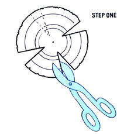
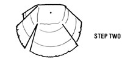
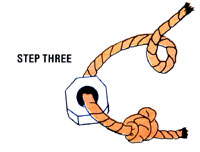

Add a little music to your porch, yard, or garden (where it just might keep seed-stealing birds away) with ...
It's easy to make your own backyard "aeolian orchestra" out of string . . . small nuts or washers . . . and tin can tops. To begin, simply remove the lids from a number of containers (different sizes will produce different tones), and cut four thin "pie" sections from each one, using wire cutters or tinsnips (see the illustration).
With that done, fold the disks into flat-sided shapes as shown, and fit each one with a string-and-washer clapper. The finished bells can be hung singly . . . one above the other (from largest to smallest or vice versa) . . . or even in a tinkling mobile of your own design.
And despite the fact that the chimes can be made from scrap materials in a few minutes' time, it would be hard to put a price on the soothing sound of their gentle singing on a warm June night!
|
 |
 |
 |